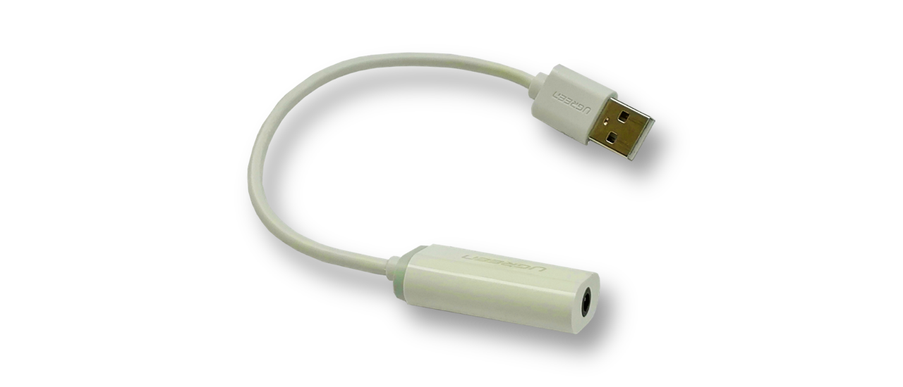
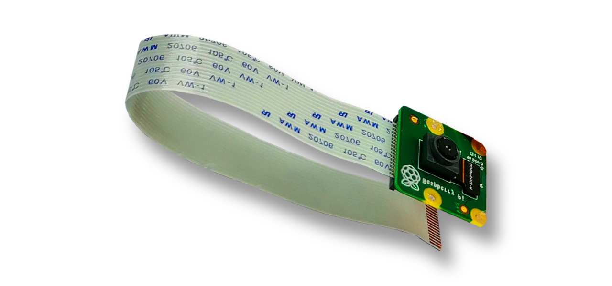
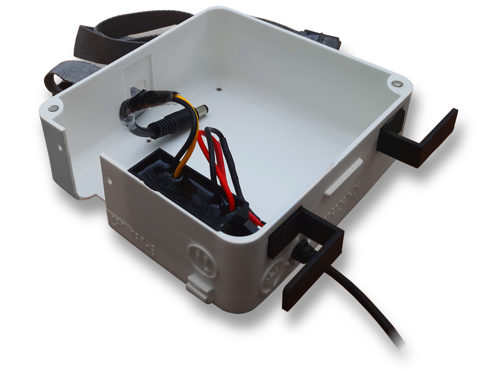

Components
To enable a portable design for everyday use, the GUIDE-Walk uses as few and compact components as possible, which are most efficient in relation to their size. The following components are housed in the case:
(hover the mouse over the components to read details)

All warnings and notifications are passed on to the wearer through a speech output. These special bone conduction headphones rest on the hearing bone and therefore do not impair the hearing ability of the blind wearer.

The cover of the main box is fixed with magnets on the underside and can therefore be easily removed at any time. It has cutouts for the camera, the LiDAR and the motion sensor.
Since the Jetson Nano does not have a headphone jack, the audio messages first have to be passed through this external sound card in order to finally reach the headphones.
The camera module is responsible for recording the images, continuously operates at 30 images per second and provides the inputs for the AI. It achieves a constant stream with a resolution of 720p (1280x720px).

In parallel to the AI detection, the LiDAR sensor uses laser beams to universally measure the distance to potential obstacles in front of the wearer. Beeping signals note when he comes too close to something (similar to the parking assistant in cars).

This motion sensor, which contains an accelerometer, gyroscope, magnetometer and a barometer for temperature and pressure, records the movement profile of the wearer and forwards it to the computer. This helps to optimize the accuracy of the AI.

The heart of the device is the Jetson Nano from Nvidia, a powerful, Linux-based single-board computer, which was expicitly designed for AI applications. Its benefits include hardware accelerated AI and integrated frameworks for machine learning. The program that evaluates the images and operates the sensors runs on this main computer.
The housing offers the electrical components a safe cover against weather and other environment factors. In the first place, it makes the device wearable. This final iteration was printed in 3D and is provided with tactile indications such as grooves and braille as well as a practical magnetic closure. The main box measures 12.9x12x6.4cm with a weight of approx. 250g.
Powerbank:

The power supply of the device is ensured by this separate battery pack, which is easy to use and can be placed in a pocket or strapped onto the belt. This means that the blind wearer has both hands free to use the aids which he is already familiar with. The battery has a capacity of 8300 mAh and weighs approx. 655g.